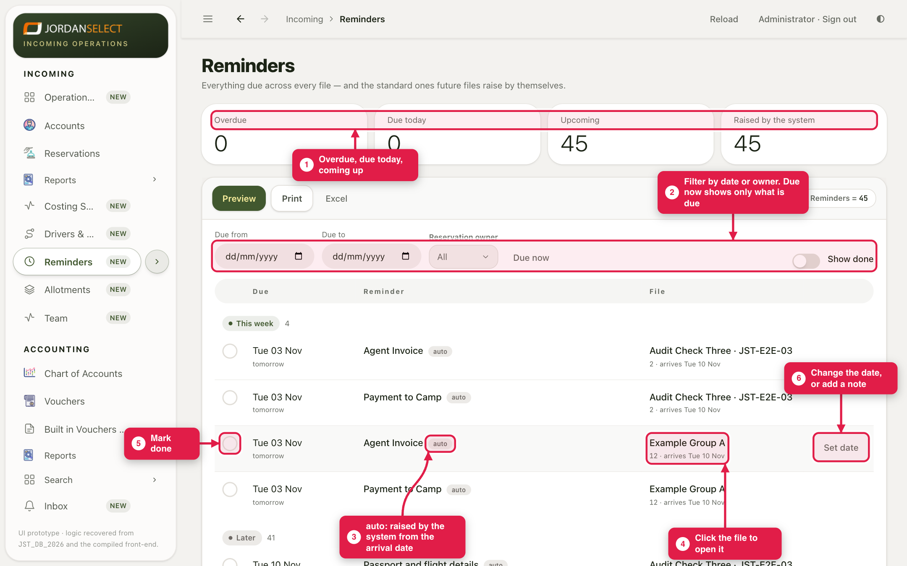
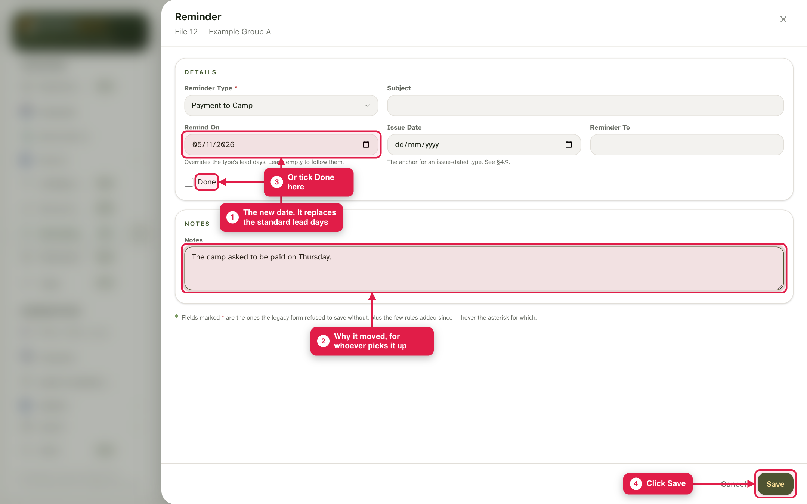
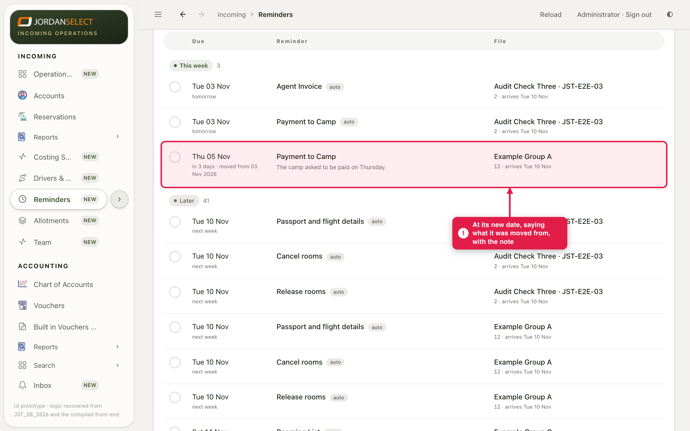
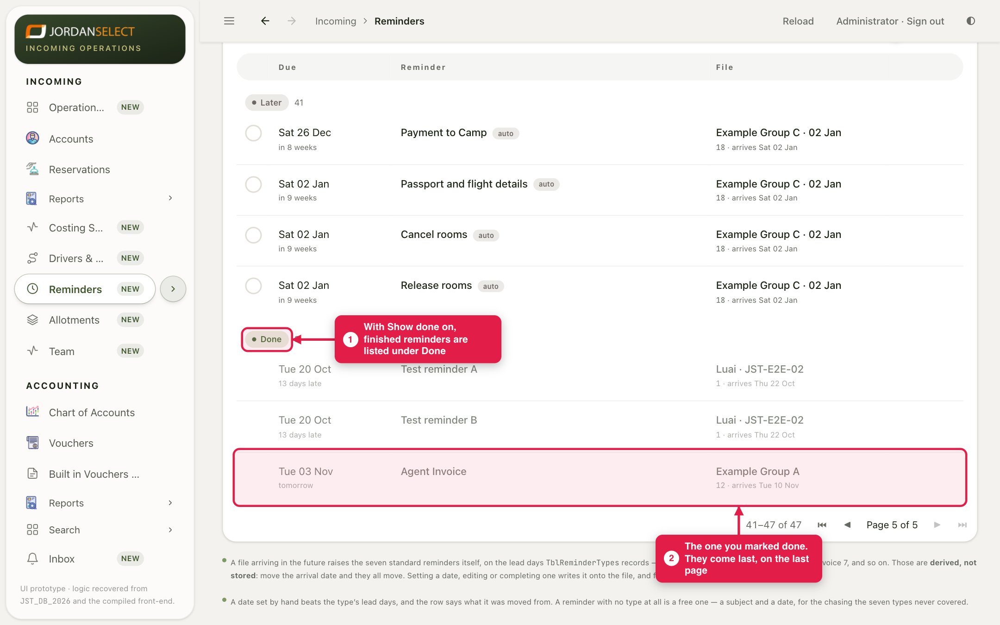

Everything to chase across every file, by the day it is due: rooming lists, restaurant bookings, agent invoices, payments.
WhoOperations and Sales
WhereIncoming → Reminders
TakesA few minutes a day
You needNothing; the standard reminders raise themselves
How it works
Every file arriving in the future raises the standard reminders by itself, a set number of days before arrival. A rooming list, for example, comes up 21 days before, and an agent invoice 7 days before. These are marked auto. Move the arrival date and they move with it. Once you change one or mark it done, it becomes that file’s own reminder.
Example in this guide: file 12 (Example Group A). Its Payment to Camp is moved to 5 November, and its Agent Invoice is marked done.
1. What is due
1
Open Incoming → Reminders. The tiles count what is overdue, due today and coming up.
2
Filter by date or by reservation owner. Due now shows only what is due.
3
On each row: the round button marks it done, the file name opens the file, and Set date changes the date or adds a note.

Reminders grouped by when they are due: this week, later.
2. Move a reminder
4
Click Set date. Type the new date in Remind On and say why in Notes. Click Save.

A date you set replaces the standard one. You can also tick Done here.
5
The reminder sits at its new date, says what it was moved from, and shows your note.

Moved from 3 to 5 November, with the reason.
3. Mark one done
6
When the job is done, click the round button on its row. It leaves the list. To see finished ones again, turn on Show done: they are listed under Done, on the last page.

The finished Agent Invoice reminder, under Done.
A reminder of your ownOpen the file, go to its Reminder tab and add one with only a subject and a date. It appears here with the others.
Questions? Ask the operations manager. · Last checked: ____ · Screens shown are from a test copy of the CRM with made-up data.